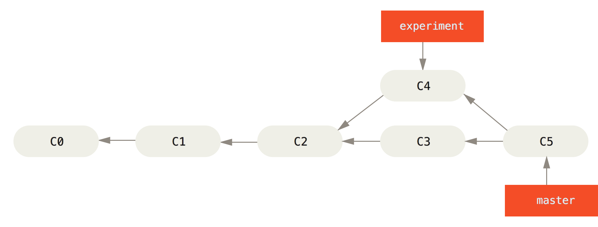
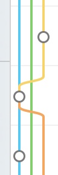

Git使用：merge和rebase介绍
更新日期:
文章目录
##merge
 图 1
图 1
如图 1所示要将experiment分支合并到master，只要运行：
git checkout master
git merge experiment
git在内部执行了如下几个操作：
- 寻找到C3,C4的最近祖先C2
- 将C2,C3和C4进行三方合并
- 生成merge commit C5
图 2
这种情形会使得提交历史出现波形，如下图：
图 3
##rebase
 图 4
图 4
还是以图 1情景为例，为了是提交记录清晰，可以使用rebase：
git checkout experiment
git rebase master
git在内部执行了如下几个操作：
- 寻找到C3,C4的最近祖先C2
- C4基于C2执行diff操作，获取patch
- 将C3合并到experiment分支，此时不会生成merge commit
- 将patch打到experiment分支
- 生成C4’
最后再将experiment分支合并到master：
git checkout master
git merge experiment
这样提交历史就不会出现图 3所示的波形情况。
参考：